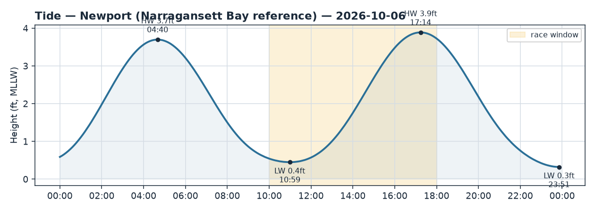
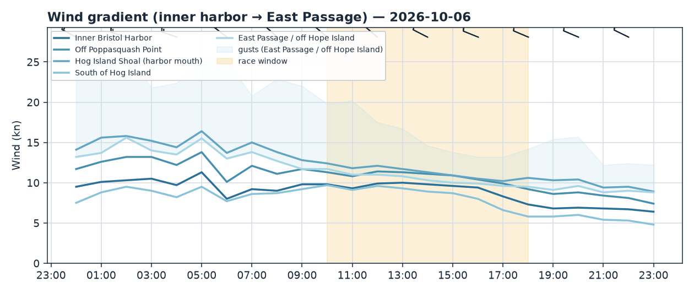
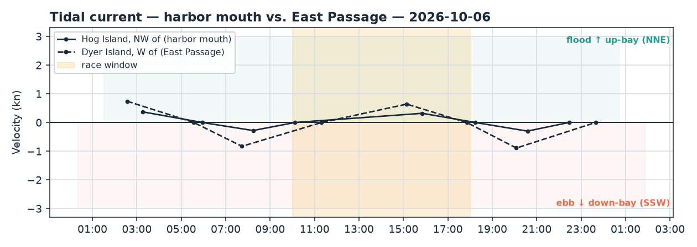

Bristol Harbor · Rhode Island
Tue 06 Oct 2026 · Daysail
A crisp, sunny fall sail — spirited NW breeze, best from late morning through mid-afternoon.
The day
It's a lovely day to get out, with bright autumn sun, dry air, and a steady northwesterly to push you along — think a spirited daysail rather than a lazy drift. The breeze is in the 10–15 knot range with occasional gusts toward 20, so it's enough to be fun without being a handful. It'll feel cool (upper 50s), so dress in layers and expect a brisk, invigorating afternoon on the water. A great day for anyone comfortable with a little honest breeze.
Wind
Expect a northwesterly all day, blowing off the Bristol and Poppasquash land to the north. Northerlies like this are naturally puffy and shifty, so plan for the breeze to dance around a bit — it keeps things interesting rather than cranky. Through the middle of the day you'll see a nice, powered-up 9–11 knots, strongest out toward the harbor mouth near Hog Island Shoal; gusts can touch the high teens, so keep a hand near the mainsheet in the puffs. The live anemometers back this up — Newport is reading a gentler 7–8 knots at the Passage mouth while Conimicut up-bay is livelier at 12–16 — and the real-world numbers are running a touch softer than the models suggested, so if anything it's friendlier than it looks on paper. The whole late-morning-to-mid-afternoon stretch is your sweet spot. The one soft spot to expect: tuck under the Poppasquash shore on the west side and you'll find a lee with lighter, patchy air — fine if you want a mellow moment, just know the breeze fills back in as you clear the point to the south and east.
Tide & current
Low water lands at 10:59 this morning and bottoms out quite low (under half a foot), so early on give the shallow harbor edges and any skinny spots near Poppasquash a wide berth before the water builds back. High tide follows at 5:14 PM. The strongest current always runs through the entrance gut by Hog Island and out in the East Passage — the inner harbor stays pretty tame. Through the midday hours the flow is near slack at the mouth (slack around 10 AM), then the flood builds through the afternoon, setting up-bay into the harbor. With a NW wind over an afternoon flood there's no strong wind-against-tide setup to worry about near the harbor, but out in the East Passage the current is stronger, so a casual sailor might notice a little more texture and chop out there than inside — nothing alarming, just a heads-up.
Good to know
Clear blue skies, sunshine, and zero rain in the forecast — a classic crisp fall day. Temperatures only reach the upper 50s to around 60, so it'll feel cool with the NW breeze and wind chill on the water; bring a warm layer, a windbreaker, and maybe gloves. With gusts reaching the high teens to 20, it's a sensible day to keep life jackets on, especially for kids and less-experienced crew. A good plan: head out mid-to-late morning once the sun has warmed things a little and the low tide is behind you, enjoy the best breeze through the early afternoon, and aim to be back by late afternoon as the air cools and the light starts to fade. Pack a thermos — it's that kind of day.


